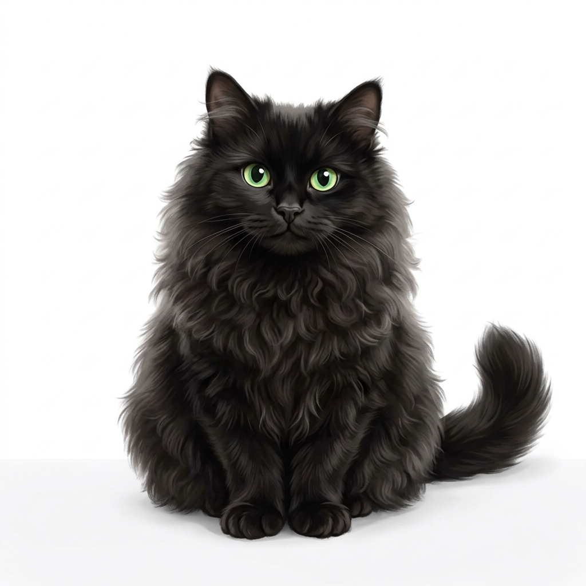

Bring your custom animated avatar to life for streaming, content creation, and videos. Simple setup, zero fuss, and definitely doesn't knock cups off tables.

We cut out the bloat so you can focus on being entertaining. Here is what's under the hood.
Animate your character instantly while streaming or recording. No lag, no stutter, just pure performance.
Automatic mouth movements driven entirely by your voice input. It matches your speech patterns organically.
Fine-tune input sensitivity thresholds to match your specific microphone and speaking style.
A simple setup with a clean, focused user interface. No need for a degree in 3D modeling to get started.
Perfect for OBS, Streamlabs, and other production software. Transparency setup takes seconds.
Robust, open-source performance that runs cleanly in the background without hogging your CPU.
Unlike other VTuber applications with complicated setups, Chucky demanded that Chibi-FX be simple enough for a cat to use. Our development process was strictly supervised to ensure high-priority features like nap-friendly UI layouts and feather-light resource usage.
"Meow, meow. Purrrr." — Chucky (Analyzing Microphone Sensitivity)
Get the latest release executable directly from our Itch.io page.
Open Chibi-FX. No complex installation or accounts required.
Import your custom 2D animated avatar frames directly into the dashboard.
Select your microphone and adjust thresholds to match your speaking style.
Set up Chroma Key in OBS and start recording or streaming immediately.
Here is what we are cooking up to make Chibi-FX even more purr-fect.
Download Chibi-FX today for free and bring your avatar to life in minutes.
Download Free